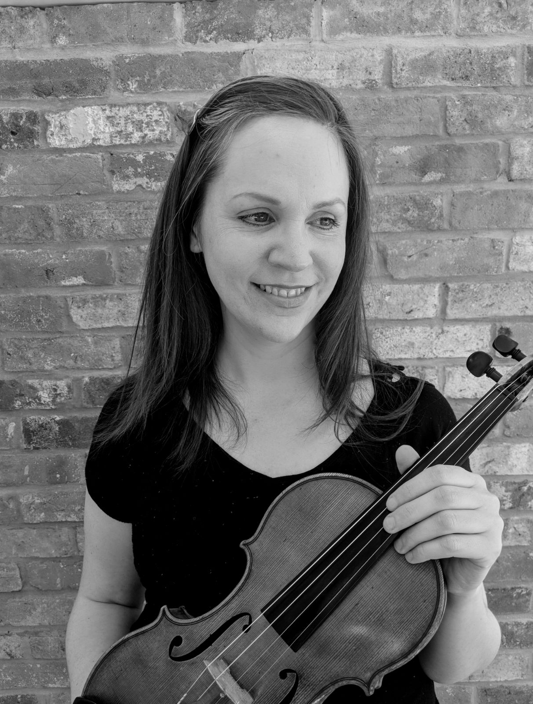

Stephanie Waite
Violinist, chamber musician, and teacher — dedicated to helping players of all ages and abilities build confidence, clarity, and expressive freedom through music-making.
Stephanie studied at the Guildhall School of Music & Drama and has enjoyed a varied career encompassing orchestral, chamber, and educational work. As both performer and teacher, she brings a blend of precision, imagination, and empathy to every musical collaboration.
She has performed with a wide range of professional ensembles and brings this breadth of experience directly into her teaching. Her students — from young beginners to advanced adult players — value her calm, practical approach and her ability to nurture technical security alongside musical understanding.
At the heart of Stephanie’s work lies a belief that learning the violin should be both disciplined and joyful: a means of connecting mind, body, and imagination. Her coaching and teaching reflect this philosophy, creating an environment where players feel supported to listen deeply, think independently, and communicate through sound.
For more about Stephanie’s performing and teaching work, visit stephaniewaite.com.